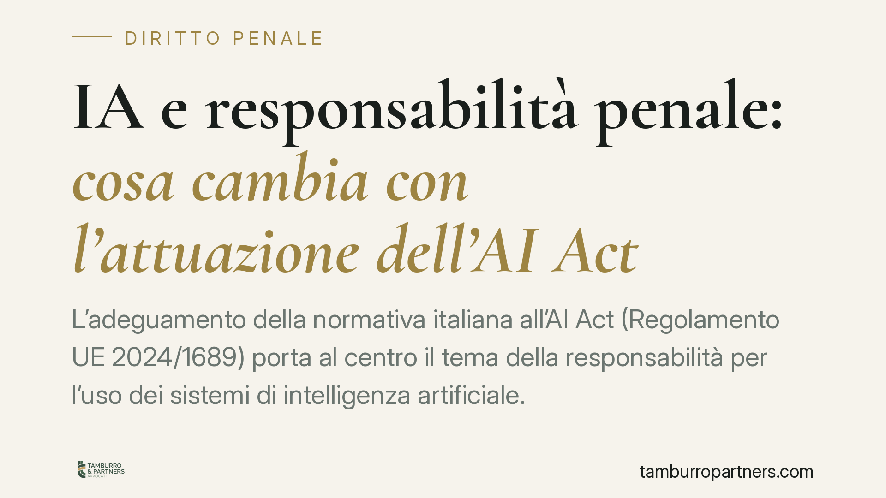

IA e responsabilità penale: cosa cambia con l'attuazione dell'AI Act
L'adeguamento della normativa italiana all'AI Act (Regolamento UE 2024/1689) porta al centro il tema della responsabilità per l'uso dei sistemi di intelligenza artificiale. Il nodo penalistico è chiaro: l'IA resta uno strumento, mentre l'imputazione ricade su persone fisiche ed enti. Ecco cosa cambia, in concreto, per chi progetta, integra o utilizza questi sistemi.

Il quadro in evoluzione
È in corso il processo di adeguamento dell'ordinamento italiano al Regolamento UE 2024/1689 (cosiddetto AI Act), entrato in vigore il 1° agosto 2024 e con applicazione scaglionata nel tempo. Il legislatore nazionale sta definendo le misure attuative e le autorità competenti, mentre il tema della responsabilità civile e penale per l'uso dell'intelligenza artificiale è al centro del dibattito.
Una precisazione doverosa: alla data di questo contributo occorre verificare puntualmente gli estremi del provvedimento attuativo (numero, data e Gazzetta Ufficiale di pubblicazione) prima di fondarvi qualsiasi valutazione. Su un tema in movimento, citare una norma significa citarla nella sua versione vigente e confermata.
Chi risponde: la persona fisica e l'ente
Sul piano penale il principio resta fermo. L'intelligenza artificiale non è un soggetto imputabile: è uno strumento. La responsabilità penale è personale (art. 27 Cost.) e ricade su chi utilizza, progetta o gestisce il sistema.
Questo significa che, di fronte a un evento dannoso o a un reato commesso "tramite" un sistema di IA, l'indagine si sposta sulle condotte umane a monte e a valle: chi ha addestrato il modello, chi lo ha integrato in un processo, chi lo ha impiegato senza controllo adeguato. Rileva anche la posizione di garanzia (art. 40, comma 2, c.p.): chi ha l'obbligo giuridico di impedire un evento risponde della sua mancata attivazione.
Accanto alla persona fisica si colloca l'ente. Se il reato è commesso nell'interesse o a vantaggio della società, si apre lo scenario della responsabilità amministrativa da reato ex D.lgs. 231/2001, con conseguenze sanzionatorie autonome rispetto a quelle dell'autore materiale.
Obblighi regolamentari e colpa penale: un rapporto da non forzare
Un punto merita chiarezza, perché è facile scivolare in una semplificazione. Gli obblighi che l'AI Act impone (valutazione dei rischi, sorveglianza umana, documentazione tecnica, tracciabilità) sono obblighi regolamentari. Non si trasformano automaticamente in regole cautelari penalmente rilevanti.
La violazione di un obbligo previsto dal Regolamento non integra di per sé la colpa. Può però concorrere a fondarla: nella valutazione del giudice, il mancato rispetto di standard normativi e delle regole dell'arte del settore diventa un elemento significativo per accertare la prevedibilità ed evitabilità dell'evento. In altri termini, l'inosservanza è un indizio pesante, non una condanna scritta.
Il profilo civile: nesso causale e prova
Sul versante civile il tema centrale è la prova del danno e del nesso causale. La complessità e l'opacità di certi sistemi (il cosiddetto effetto "scatola nera") rendono difficile, per il danneggiato, ricostruire la catena causale.
La tendenza normativa europea va verso meccanismi di agevolazione probatoria a favore del danneggiato, con possibili presunzioni relative quando l'operatore non collabora nel fornire la documentazione tecnica. Chi impiega sistemi di IA deve quindi attendersi un onere di trasparenza più stringente: l'assenza di tracciabilità rischia di ritorcersi contro chi la subisce.
Il doppio taglio dei log
La tracciabilità è insieme scudo e spada. I log e la documentazione tecnica possono dimostrare che l'operatore ha adottato tutte le cautele esigibili; ma gli stessi dati possono provare l'esatto contrario, evidenziando allarmi ignorati o controlli mai attivati.
La qualità della registrazione e la sua conservazione integra diventano quindi decisive, in ottica sia difensiva sia di conformità.
Cosa fare in concreto
- Mappate i sistemi di IA in uso e classificateli per livello di rischio secondo le categorie dell'AI Act, individuando ruolo e responsabilità di ciascun soggetto coinvolto.
- Aggiornate il modello organizzativo ex D.lgs. 231/2001, includendo i reati astrattamente commettibili tramite sistemi di IA e i relativi presìdi di controllo.
- Formalizzate la sorveglianza umana: definite chi controlla, con quali poteri di intervento e sospensione, tracciando ogni decisione rilevante.
- Conservate log e documentazione tecnica in modo integro e datato, con criteri di retention adeguati ai termini di prescrizione.
- Verificate gli estremi normativi aggiornati con un professionista prima di adottare policy interne fondate su norme in evoluzione.
Disclaimer
Contributo informativo a cura di Tamburro & Partners - Avv. Giuseppe Tamburro. Non costituisce parere legale.
Ogni condominio ha una storia a sé.
Se gestisci un'amministrazione e vuoi un confronto su una specifica questione condominiale, scrivi allo studio. Ti rispondiamo entro un giorno lavorativo.